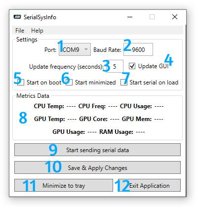

The GUI
The GUI contains all the needed controls in one simple to use window.

In the screenshot above, the elements numbered are as follows:
- This is where you select the serial port to connect to
- The baud rate for the data transfer. Default is 9600
- How often should the data be updated and sent to the serial device (In seconds)
- Whether or not the data in the window (see 8) will also be updated
- If ticked, the software will start when you login to Windows.
- When the software is started, it will be minimized to the tray right away
- Upon launch, send serial data straight away without having to press the button (see 9)
- The GUI area containing the metric data
- Start or stop the sending of serial data
- Saves and applies any changed you might have made to the settings area
- Minimizes the software to the system tray
- Exits the program